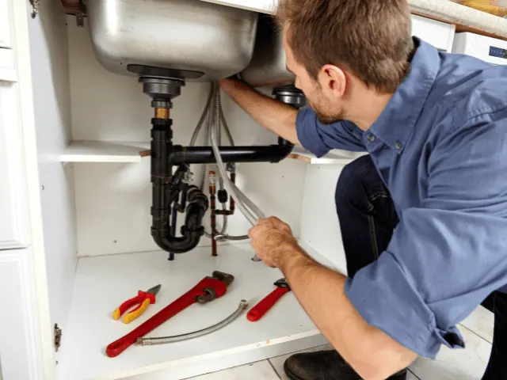
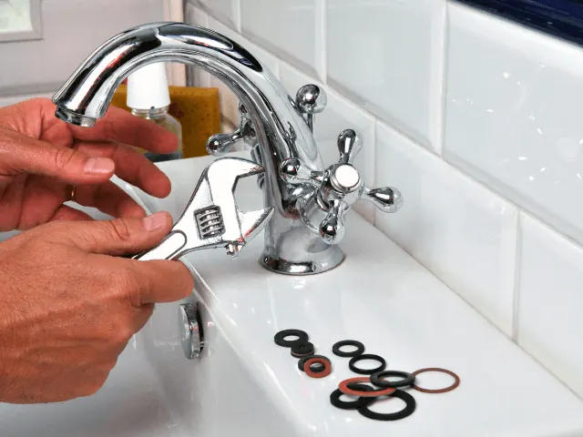
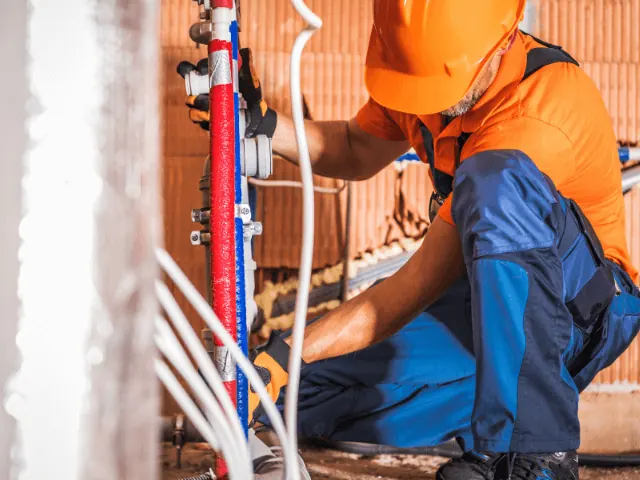
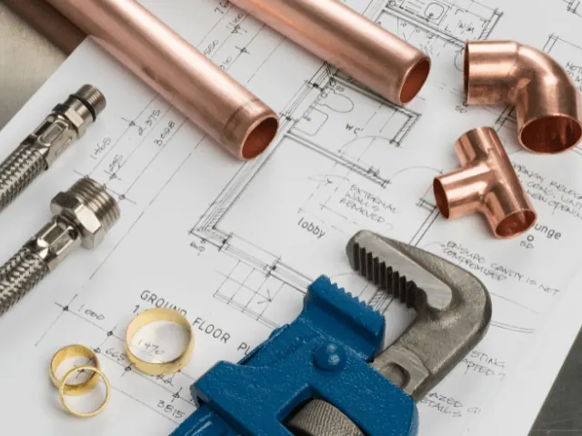

‘Help mijn douche overstroomt’, waar vind ik een loodgieter in Nijmegen?
Gepubliceerd op 15 mei 2023, bijgewerkt op 26 februari 2024

Loodgieters, daar heb je er wat aan. Tenminste, als je de pech hebt dat er iets mis is met je leidingen, je afvoer, je dakgoten of je sanitair. Dan komt er zo’n man in zijn blauwe overall bij je over de vloer. Hij kijkt even rond, hoopt op een goede bak koffie en gaat vervolgens aan de slag. Vaak duurt het even voordat je weer water hebt, maar dat moet je er maar voor over hebben. Want zonder een loodgieter, zit je al snel letterlijk in de shit.

Hoe vind je de beste loodgieter?
Het is natuurlijk altijd lastig om een goede loodgieter te vinden. Je hebt er vaak op het meest ongelegen moment één nodig en dan moet je snel handelen. Maar hoe vind je nou een goede? Eigenlijk kun je het beste te rade gaan bij je omgeving. Vraag vrienden, familie of kennissen of ze een goede loodgieter kennen en wat hun ervaringen zijn. Zo krijg je een goed beeld van de kwaliteit van de loodgieter en de service die hij biedt.
Als je niemand in je omgeving kent die je kan helpen, kun je ook online zoeken. Er zijn diverse websites waar je reviews en beoordelingen van loodgieters kunt vinden. Let er wel op dat je niet alleen op de prijs afgaat, maar ook op de kwaliteit van de service en het vakmanschap van de loodgieter. Een goede loodgieter heeft verstand van zaken en kan snel en vakkundig problemen oplossen. En voorkomt dat je binnen de kortste keren weer met hetzelfde probleem komt te zitten.
Het belangrijkste is dat je je goed voelt bij de loodgieter die je kiest. Het is tenslotte iemand die in jouw huis komt en je wilt erop kunnen vertrouwen dat hij zijn werk goed doet. Vraag daarom altijd om referenties en controleer deze ook. Zo kun je er zeker van zijn dat je met een betrouwbare en professionele loodgieter in zee gaat.

Zoek niet verder, en word zelf loodgieter!
Nou, als je loodgieter wilt worden, moet je natuurlijk beginnen met het leren van de basisprincipes van het vak. Je zou bijvoorbeeld een opleiding tot loodgieter kunnen volgen, of jezelf aanmelden voor een leerlingplaats bij een ervaren loodgieter. Het is belangrijk om te leren hoe je leidingen moet installeren, repareren en onderhouden, evenals hoe je verschillende soorten apparatuur en gereedschap moet gebruiken.
Daarnaast is het van belang om de nodige certificaten en vergunningen te verkrijgen om als loodgieter te mogen werken. Denk hierbij aan bijvoorbeeld het VCA-certificaat en een vakbekwaamheidsdiploma.
Maar het belangrijkste is om ervaring op te doen. Door veel te oefenen en te werken aan verschillende projecten, zul je uiteindelijk een ervaren en bekwaam loodgieter worden. En wie weet, misschien word je wel net zo’n goede loodgieter als onderstaande bedrijven.

Eerste hulp bij een overstromende douche
Zo, daar sta je dan, tot je enkels in het water en je badkamer lijkt meer op een zwembad dan op een douche. Niet de bedoeling natuurlijk. Maar geen paniek, met de juiste stappen kun je deze overstroming aanpakken.
Allereerst: zet de waterkraan dicht! Dit lijkt misschien voor de hand liggend, maar je zou er versteld van staan hoeveel mensen in paniek raken en vergeten de kraan dicht te draaien. Stap 1 dus!
Vervolgens moet je het water op de een of andere manier weg zien te krijgen. Als het water niet al te diep is, kun je het proberen op te dweilen of met een speciale waterzuiger op zuigen. Als het water te diep is, dan kun je een emmer of een container gebruiken om het water uit de douchebak te scheppen.
Zodra je al het water hebt verwijderd, moet je de oorzaak van de overstroming aanpakken. Vaak is een verstopte afvoer de boosdoener. Als je denkt dat dit het probleem is, kun je een ontstoppingsmiddel gebruiken om de afvoer te ontstoppen. Maar wees voorzichtig, sommige middelen kunnen schadelijk zijn voor de leidingen en het milieu.
Als je er niet in slaagt de afvoer te ontstoppen, bel dan snel een loodgieter. Zij hebben de kennis en de juiste gereedschappen om het probleem snel op te lossen. En in Nijmegen vind je genoeg vakmannen die jou van je zwembandjes ontdoen en het probleem fiksen

Overzicht Loodgietersbedrijven in Nijmegen
Lekdetec Nijmegen
LekDetec in Nijmegen is uw betrouwbare partner voor het opsporen en repareren van lekkages. Met hun geavanceerde technologie en ervaren team, sporen ze lekkages snel en nauwkeurig op, waardoor verdere schade wordt voorkomen. Ze hanteren een klantgerichte aanpak, communiceren duidelijk en zorgen voor een snelle en efficiënte service. Of het nu gaat om een kleine lekkage of een complex probleem, LekDetec levert altijd topkwaliteit werk. Kies voor LekDetec in Nijmegen en laat uw lekkageproblemen vakkundig oplossen.
Riocare
Riocare in Nijmegen is gespecialiseerd in het oplossen van lekkages en andere problemen met uw riolering. Met een team van ervaren professionals en de nieuwste apparatuur, kunnen zij zelfs de meest uitdagende problemen aan. Hun service kenmerkt zich door snelheid, efficiëntie en precisie. Ze reageren snel op uw oproep en werken hard om het probleem zo snel mogelijk te verhelpen. Met Riocare in Nijmegen kunt u rekenen op een uitstekende service en een team dat streeft naar uw volledige tevredenheid. Kies voor Riocare om uw rioleringsproblemen vakkundig op te lossen.
Nimit Installatietechniek
Nimit Installatietechniek in Nijmegen is een toonaangevend bedrijf in de sector, bekend om zijn expertise en klantgerichte service. Of het nu gaat om het verhelpen van lekkages, het installeren van nieuwe systemen of onderhoudswerkzaamheden, Nimit levert altijd hoogstaand werk. Ze hebben een toegewijd team van professionals die met hun uitgebreide kennis en ervaring elke klus met precisie aanpakken. Nimit Installatietechniek staat garant voor een snelle reactietijd, uitstekende klantenservice en duurzame oplossingen. Vertrouw op Nimit Installatietechniek in Nijmegen voor al uw installatiebehoeften.